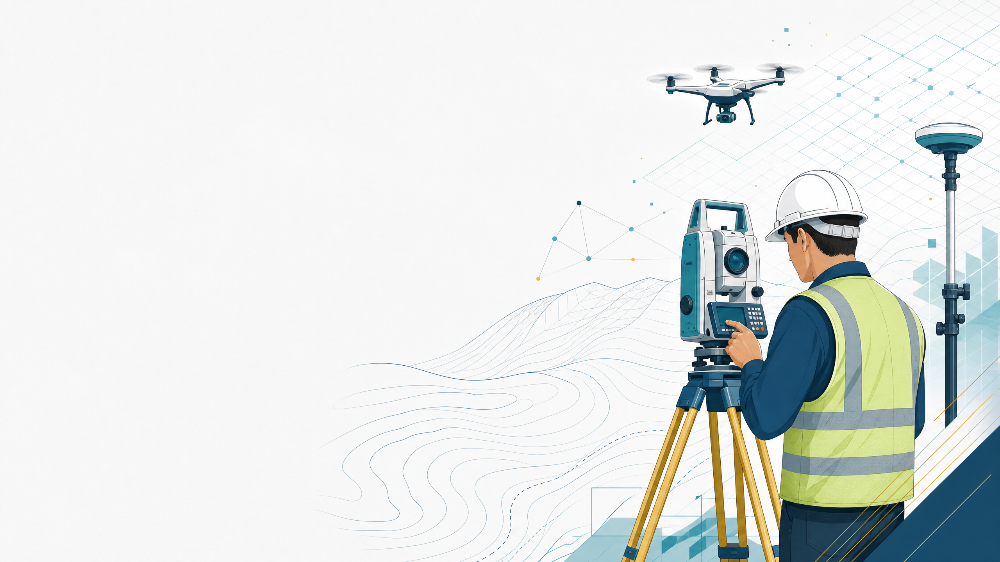

O problema não é desenhar rápido. É transformar dados em informação auditável.
Prof. Dr. Erison Rosa de Oliveira Barros
Engenharia Cartográfica e de Agrimensura
Disciplina: Projeto de Levantamento Topográfico